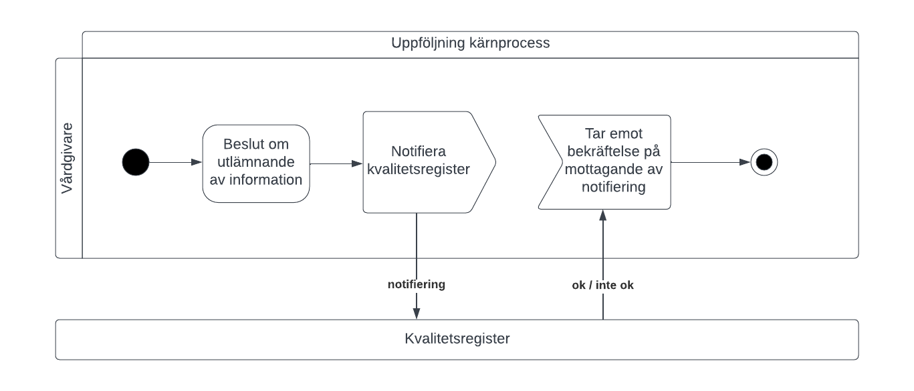
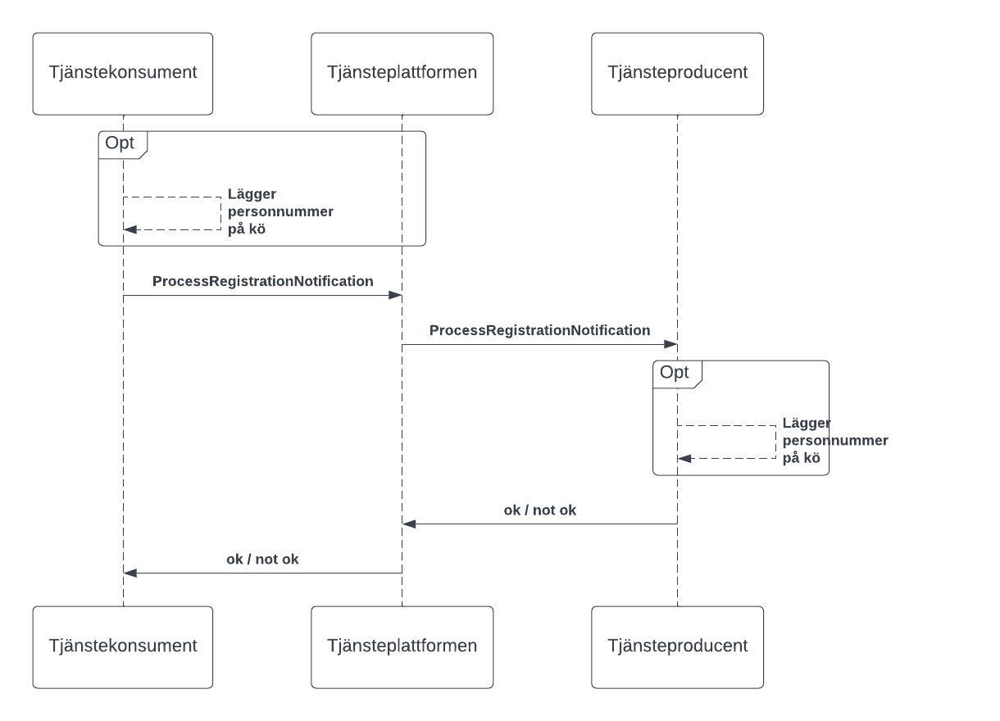
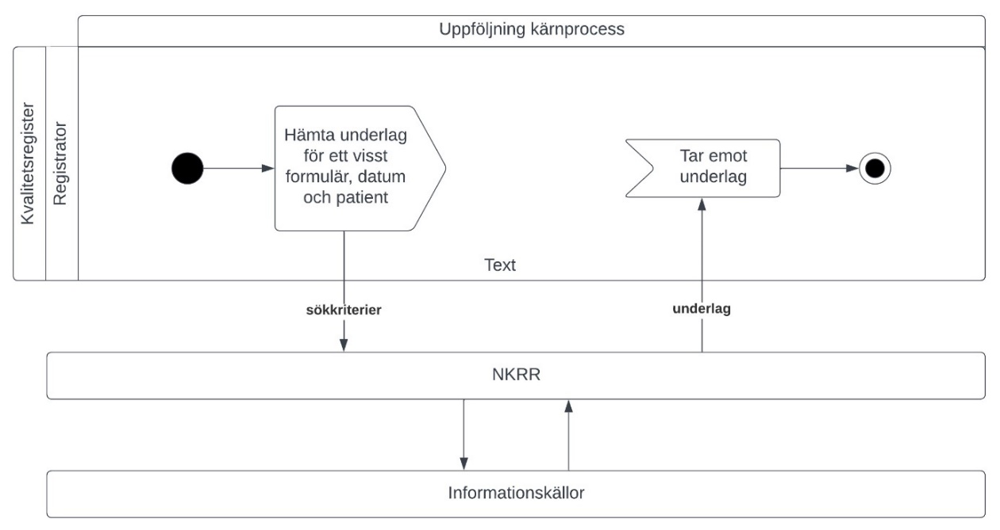
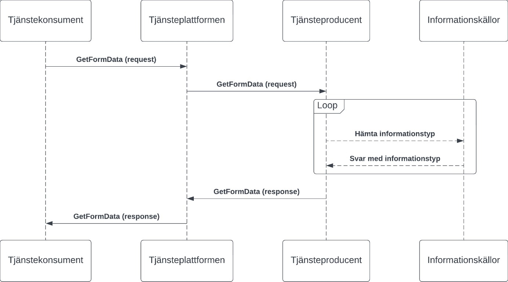

followup: qualityregistry: nkrr
1.2.2 - draft
followup: qualityregistry: nkrr - Local Development build (v1.2.2) built by the FHIR (HL7® FHIR® Standard) Build Tools. See the Directory of published versions
Detta kapitel beskriver de flöden som är relevanta för tjänstedomänen. Beskrivningarna är i form av modeller, för varje flöde finns dels ett arbetsflöde som beskriver vilka steg som ingår i flödet, dels ett sekvensdiagram som tar hänsyn till vilka tjänstekontrakt som nyttjas i de olika stegen.
En vårdgivare notifierar ett kvalitetsregister om att vårdgivaren har uppgifter om en patient som kan vara relevanta för kvalitetsregistret att ta del av.

| Namn | Beskrivning |
|---|---|
| Vårdgivare | Statlig myndighet, region, kommun, annan juridisk person eller enskild näringsidkare som bedriver hälso- och sjukvårdsverksamhet och som lämnar ut information till ett kvalitetsregister. |
| Kvalitetsregister | Register som tar emot notifiering och som med dess registrerade uppgifter ger kunskap om hur vården och omsorgen fungerar och kan förbättras. |

| Namn | Beskrivning |
|---|---|
| Tjänstekonsument | Det system som har behov av att notifiera ett kvalitetsregister. |
| Tjänsteplattformen | Ett nav mellan olika system och tjänster. Tjänsteplattformen dirigerar meddelanden vidare till rätt tjänst/system med hjälp av tjänsteadresseringskatalogen. |
| Tjänsteproducent | Det system som tar emot notifieringar för ett eller flera kvalitetsregister. |
Hämtning av underlag till kvalitetsregister över NKRR förlöper i två typiska scenarier. Ett delvis automatiserat förlopp, där hälso- och sjukvårdspersonal (registrator) hos en vårdgivare loggar in i aktuellt kvalitetsregister och i ett registreringsformulär, per patient, begär hämtning av uppgifter från vårddokumentationen hos vårdgivaren för automatisk förifyllnad av fält, till hjälp för registrerande personal. Detta är en vanlig lösning då data till ett formulärs alla fält inte finns att hämta med automatik utan en registrering även kräver kompletterande manuell ifyllnad av vissa fält. Ett andra förlopp är ett helt automatiserat sådant och kan fortlöpa utan bistånd av hälso- och sjukvårdspersonal. I ett sådant förlopp används notifiering till kvalitetsregister. Det kvalitetsregister som tagit emot en notifiering fullföljer automatiskt den önskade patientregistreringen med anrop till vårdgivaren via NKRR. Frågorna som finns definierade för formuläret evalueras mot inhämtat underlag utifrån givna regelskrivningar i NKRR, och resultatet med associerat beslutsunderlag sammanställs i svaret. Nedanstående diagram visar hur flödet ser ut när information hämtas med NKRR.

Arbetsflöde| Namn/beteckning | Beskrivning alt. referens |
|---|---|
| Kvalitetsregister | Med kvalitetsregister avses ett kvalitetsregistersystem som hanterar och lagrar patientuppgifter, journalhistorik, avseende ett specifikt patienturval. |
| Registrator | Med registrator avses person som vill hämta information. En registrator är inte aktuell i ett helautomatiserat förlopp. |
| NKRR | Tjänst som besvarar frågeställningar och ställer samman svar till dessa baserat på de underlag som hämtas från informationskällorna. |
| Informationskällor | System där information hämtas. |

| Namn | Beskrivning |
|---|---|
| Tjänstekonsument (kvalitetsregister) | Uppföljningssystem som inhämtar underlag från landets vårdgivare via anrop över tjänsteplattform till en tjänst för sammanställning av underlag. |
| Tjänsteplattformen | Ett nav mellan olika system och tjänster. Tjänsteplattformen dirigerar meddelanden vidare till rätt tjänst/system med hjälp av tjänsteadresseringskatalogen. |
| Tjänsteproducent (NKRR) | Producerar tjänst för sammanställning av underlag till kvalitetsregister. Anropar i sin tur olika tjänster producerade av vårdgivare, här kallade informationskällor. |
| Informationskällor | Informationstjänster som producerar underlag från vårdgivares vårddokumentationssystem. |
Följande tabell specificerar vilka kontrakt som är obligatoriska att realisera för respektive flöde.
| Tjänstekontrakt | Notifiering till kvalitetsregister | Kvalitetsregister hämtar underlag |
|---|---|---|
| ProcessRegistrationNotification | X | |
| GetFormData | X |
Tjänstekontraktet ProcessRegistrationNotification använder systembaserade logiska adresser. Ett kvalitetsregisters system eller en registerplattform förses med en identitet och det är denna som adresseras och via tjänsteadresseringskatalogen översätts till den anropsadress som gäller för systemet. Tjänstekontraktet GetFormData tillämpar verksamhetsbaserad adressering. Det innebär att den logiska adressen i anropet ska innehålla informationsägande enhets identitetsbeteckning.
Denna domän tillämpar inte aggregering och uppdaterar inte engagemangsindex.